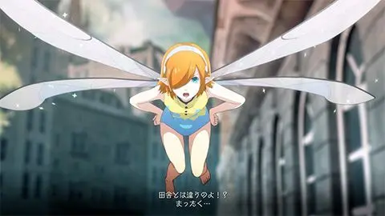
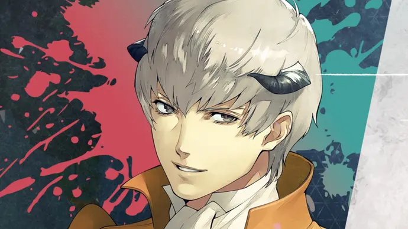
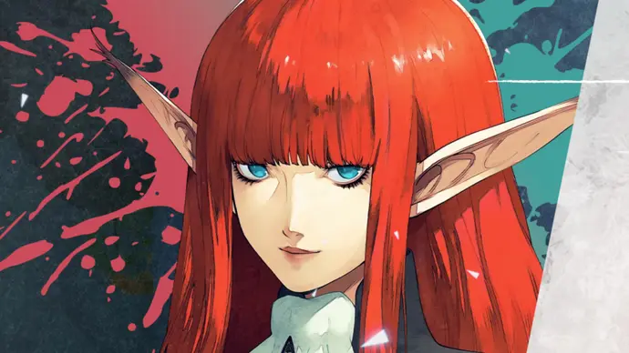
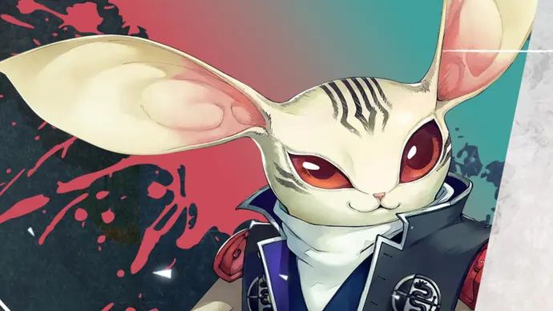
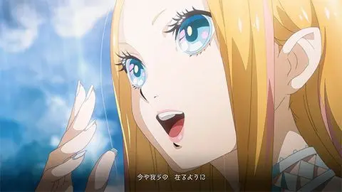
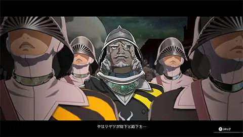
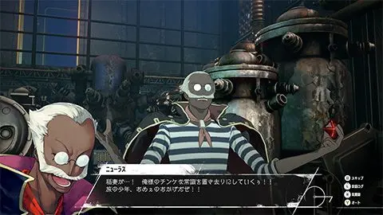

Un garçon voyage avec sa fée partenaire, Garika, afin de lever la malédiction de mort que lui a imposée son meilleur ami depuis l’enfance, le prince d’Euclonie. Il est né dans la tribu Elda, une race minoritaire qualifiée par la religion d’État Seikyo de « race sale qui hérite d’une magie dangereuse qui va à l’encontre de ses enseignements
Une fée qui non seulement accompagne le protagoniste dans son voyage, mais sert également de guide spécial pour sauver le prince. Les fées sont rares dans ce monde et ne peuvent pas participer directement aux batailles, mais elles sont douées pour confirmer les opérations et fournir des informations locales, et sont parfois harcelantes, parfois gentilles, et sont des compagnes importantes qui guident le protagoniste. Cependant, ses amis se plaignent parfois, disant des choses comme : « S’ils volent pendant que je dors, je ne peux pas dormir parce que je m’inquiète du bruit des ailes. » Elle fait également partie des « adeptes » et réveille l’archétype du « magicien » du personnage principal.
Un jeune homme de la tribu Cremar issu d’une famille aristocratique. Afin de transmettre un message à Grias, qui infiltre l’armée nationale en tant que soldat, le protagoniste rencontre le protagoniste, qui a décidé de se porter volontaire comme soldat, à la caserne de recrutement de la capitale. La raison pour laquelle il se porte volontaire pour le service militaire même s’il est un noble est qu’il a un lien profond avec les êtres humains dans le passé, qu’il a le courage de se lever et de se battre devant les gens ordinaires, et qu’il est assez fort pour traiter tout le monde. également. Possède le sens de la justice. Le premier archétype qui s’éveille en lui est « Combattant ».
Une femme chevalier de la tribu Lusanto qui fait partie de l’ordre régulier des chevaliers du royaume et qui servait autrefois de garde personnelle d’un prince. Cependant, lorsque Louis attaqua le prince, celui-ci fut incapable de remplir son devoir de protection de son seigneur, il recula donc et quitta longtemps la capitale. Après avoir appris la mort du roi, il retourne dans la capitale, où il rencontre les protagonistes et se lance à nouveau dans la bataille. D’un côté, il est un peu têtu et dur, mais d’un autre côté, il a aussi la force d’un mauvais mangeur pour donner un goût délicieux à tout type de nourriture, et il y a un certain naturel chez lui. Le premier archétype qui s’éveille en elle est « Chevalier ».
Un ancien chevalier de la tribu Yuzif avec une apparence distinctive avec des ailes et des oreilles en forme de chauve-souris. C’est aussi une personne avec un passé douloureux, mais pour surmonter ce passé, il décide de faire face à ses propres insécurités et réveille son archétype. Contrairement à son apparence apparemment comique, il est adepte des tactiques agiles, et l’archétype qui s’éveille en premier à lui est celui du « voleur ».
Une belle diva de la tribu Nidia avec une voix rare et belle qui est considérée comme la meilleure du royaume. Il joue régulièrement le rôle de visage lors d’événements majeurs parrainés par la famille royale et le gouvernement Kyokyo, et est extrêmement connu au-delà des frontières nationales. Dans sa vie privée, elle est proche de Louis, et la rumeur court qu’elle occupe pratiquement une position similaire à celle d’une assistante. Junah réveille également l’archétype du «Danseur masqué» et rejoint plus tard les protagonistes dans leur voyage.
Un camarade de la même organisation que le protagoniste et Garika. La personne à qui Garika doit livrer les détails de la mission qui lui a été confiée par l’organisation : « Assassiner le lanceur de sorts Louis afin de lever la malédiction du prince. » Guerrier vétéran de la tribu Rogue, il avait auparavant infiltré l’armée et travaillé comme agent. En plus d’être un expert en arts martiaux, il est également doué en magie et a même tenté une fois d’apprendre des archétypes. Anticipant que Louis se présenterait définitivement aux funérailles nationales du roi, le protagoniste part en mission avec Grius.
Un ingénieur de char blindé ishkien. Un génie qui s’occupe lui-même de tout, de la conception à la maintenance et à l’exploitation. En fait, il est le fils d’une grande famille aristocratique qui possède un manoir au centre de la capitale royale, mais il ne s’intéresse ni au statut social ni à la situation familiale, et est considéré par sa famille comme un excentrique incorrigible. Cependant, il ne tombe pas facilement dans la dépression, même lorsque ses amis ont de sérieux problèmes, et il est également un créateur d’ambiance qui apporte une ambiance joyeuse au voyage. Bien qu’il ne participe pas aux batailles dans le donjon, il est l’un des soutiens importants dans le voyage du protagoniste et éveille l’archétype du « Gunner » chez le protagoniste.